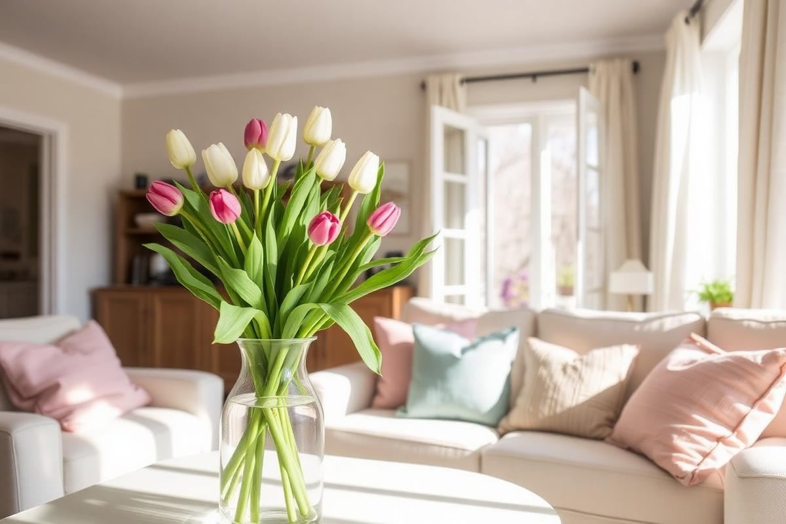
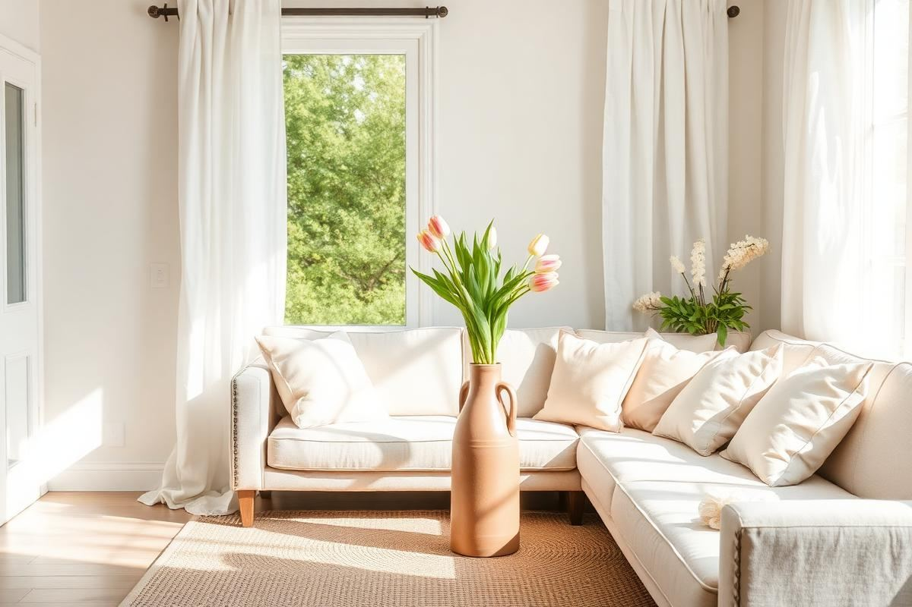
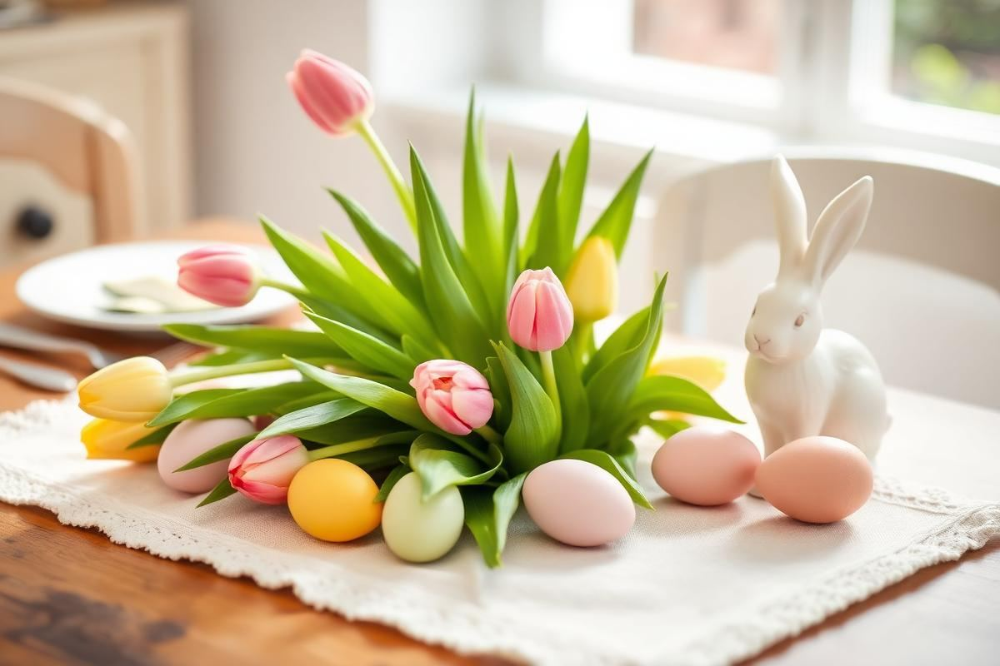

Spring Home Refresh: 10 Small Changes

Spring Home Refresh: 10 Small Changes is one of those topics where a little planning goes a long way. In this guide I walk through the process we use in real homes — not just what looks good in a photo, but what actually holds up over time.
Start here
Before you buy or move anything, measure the space and note how you actually use it. The best-looking room is one that matches how you live, so start with the routines: where you sit, where you drop keys, where the light falls in the afternoon.
The essentials
Focus on the pieces that do the most work. Get those right and the rest of the room comes together with much less effort. Aim for materials that patina rather than degrade, and colors you will still like in five years.
- Choose one clear focal point per room.
- Pick materials that improve with age.
- Layer textures instead of adding more colors.
- Leave visual breathing room — negative space is a design element.
Common mistakes
The mistakes we see most often are matching everything too tightly, over-scaling accessories, and skipping proper lighting. Fix those three and most rooms improve overnight.

Color Palette Pitfalls and Perfection
When approaching a spring home refresh, the inclination is often to introduce bright, bold colors. However, a truly cohesive and inviting space requires a more nuanced approach than simply adding a few vibrant throw pillows. The biggest mistake homeowners make is selecting colors that clash with existing foundational elements like flooring, large furniture pieces (sofas, armchairs), or wall paint that isn't being updated. Instead of forcing a trendy hue, identify the undertones present in your current decor. Are your walls a cool gray with blue undertones, or a warm beige with yellow? This dictates whether a sunny daffodil yellow or a softer buttercup shade will truly harmonize.
Strategic Color Application: Beyond the Bright
Consider a 60-30-10 rule for your spring palette: 60% dominant neutral (your existing wall/large furniture color), 30% secondary color (a softer spring tone like sage green or pale blue), and 10% accent color (a brighter pop like coral or chartreuse). For example, if your living room has cream walls and a beige sofa, instead of jumping to fuchsia, introduce soft moss green linen throw pillows (around 18"x18" for two, typically $25-$40 each for good quality covers) and a light oak coffee table tray with subtle veining. Your 10% could then be a small ceramic vase with a single vibrant tulip, costing $15-$30. This layered approach prevents visual chaos and ensures your spring additions feel intentional. Avoid introducing more than three primary new colors; simplicity elevates sophistication.
Textile Triumphs and Tactile Truths
Textiles are the unsung heroes of seasonal refreshes, offering an immediate textural and visual shift without major commitment. For spring, shed heavy velvets and chunky knits. Embrace lighter, breathable fabrics that evoke a sense of airiness. Linen is paramount; a linen throw draped over a sofa arm (consider a 50"x60" size for about $40-$70) instantly lightens the room. Look for organic cotton cushion covers or lightweight wool blends in pastel shades. Don't overlook sheer curtains; replacing weighty drapes with gauzy linen or cotton sheers allows more natural light to filter in, creating an ethereal glow. A pair of 84"L x 50"W linen blend sheer panels can cost $30-$60 per pair, making them a high-impact, low-cost upgrade.
Layering Textures for Depth
- Start with a foundational neutral: A jute or sisal rug (a 5'x7' starts at $100-$200) introduces natural texture without overwhelming.
- Add a softer layer: Place cotton or linen throw pillows (approx. 20"x20" for $20-$40 each) on sofas and chairs.
- Introduce a tactile accent: A delicate cashmere-blend throw (a smaller 30"x40" starting around $50) or a hand-woven decorative basket (a 12" diameter basket for $25-$50) adds visual interest.
- Incorporate natural elements: Fresh flowers or branches in a simple ceramic vase provide organic texture and fragrance.
Avoid overly patterned textiles if your aesthetic leans minimalist; instead, focus on variations in weave and fiber content.
Plant Power: Beyond the Pothos
While a Pothos is always welcome, spring is an opportune moment to broaden your botanical horizons. Live plants purify the air and infuse spaces with vitality. For spring, prioritize flowering plants that offer color and fragrance. Hyacinths, tulips, and daffodils are excellent choices for temporary indoor displays. Purchase them potted (a 6" potted hyacinth costs $10-$15) and place them in decorative cachepots or simple ceramic containers. Once bloomed, they can often be replanted outdoors. For more lasting greenery, consider a Fiddle Leaf Fig (a 3-foot plant costs $60-$100) or a large Bird of Paradise (similar price point) if you have ample light. These statement plants act as living sculptures, drawing the eye and grounding the room.
Strategic Placement and Care
Placement is key. Grouping several smaller plants of varying heights creates a lush vignette. For example, cluster a small fern, a succulent, and a blooming African Violet on a side table. Ensure plants receive appropriate light; most spring bloomers prefer bright, indirect light. Rotate plants weekly to encourage even growth. Misting tropical plants daily (using a fine mister for $10-$15) is beneficial for humidity. Don't forget their containers; swapping out plastic nursery pots for terracotta, ceramic, or woven baskets (a 10" terracotta pot goes for $10-$20) can significantly elevate their aesthetic impact. Remember to use drainage dishes to protect surfaces.
Lighting: Liveliness and Layered Glow
Spring demands a shift in lighting from cozy warmth to bright, invigorating illumination. The primary mistake is relying solely on overhead lighting. A layered lighting scheme is crucial. Start by maximizing natural light: clean windows thoroughly (use a 1:1 vinegar/water solution for streak-free results). Use sheer or light-filtering window treatments that don't block sunlight entirely during the day. For artificial light, consider temperatures. Swap out warm, incandescent bulbs (e.g., 2700K) for cooler, daylight-mimicking LEDs (around 3500K-4000K) in task lighting and general ambient fixtures. This small change markedly brightens and enlivens a room. A pack of 4 LED bulbs (60W equivalent, 3500K) can cost $15-$25.
Creating Ambiance with Fixtures
Introduce additional, smaller light sources to create pockets of warmth and interest. A tall floor lamp (5-6 feet, $60-$150) featuring a linen shade adds height and diffuse general light. Desk lamps (15-20 inches, $30-$80) and small table lamps (12-18 inches, $25-$75) provide task lighting and contribute to a multi-dimensional glow. Battery-operated LED string lights (approx. 10 feet, $10-$20) artfully draped over a bookshelf or mantelpiece can add a whimsical, soft sparkle for evening ambiance. Always position floor and table lamps at varying heights to avoid a flat, one-dimensional look. Dimmers are also highly recommended for overhead fixtures to allow for flexibility throughout the day and evening.
Key takeaways
- Match the room to how you actually live.
- Anchor with one main piece and clear lighting.
- Layer textures, not colors.
- Leave breathing room around every object.
Frequently asked questions
Where should I start?
Start with the largest piece and the light. Everything else — art, textiles, small objects — is easier to place once those two anchors are set.
What is a realistic budget?
Prioritize the pieces you touch every day. Spend more on those and less on decorative items, which are easy to swap over time.
How long should this last?
A well-chosen main piece should last 10–15 years. Refreshes come through textiles, art, and accessories, not full replacements.

Sophia Bennett is a certified interior stylist and the senior editor at Styleire. She has spent more than eight years helping homeowners and renters create warm, functional interiors, with hands-on experience across small city apartments and family homes. Her work has been informed by close collaboration with independent designers, craftspeople, and product testers.
View full profile →Related reading

How to Build a Warm Neutral Color Palette for Your Home
Warm neutrals are the safest and most flattering base for a whole-home palette. Here is how to build one on purpose.

How to Arrange Throw Pillows on a Sofa Without Overdoing It
How to Arrange Throw Pillows on a Sofa Without Overdoing It — a clear, editor-tested guide covering the essentials without the filler.

Easter Decor Ideas That Aren't Twee
Easter Decor Ideas That Aren't Twee — a clear, editor-tested guide covering the essentials without the filler.